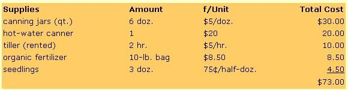
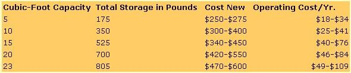
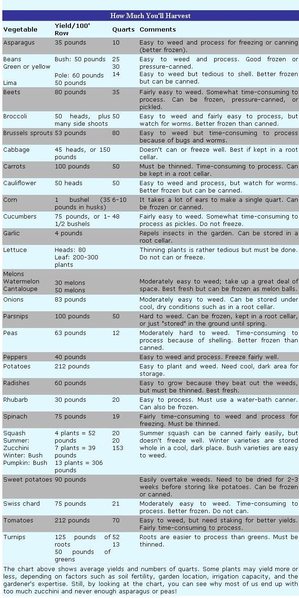

It's seed catalog time again! But wait! Before you order too much or too little, consider...
This is the time of year when even a hint of warmth sends us scurrying off to rummage through seed catalogs. With taste buds aquiver, we spend our evenings planning that beautiful, vastly bountiful dream of a garden. For many years, though, my preseason vision refused to turn into a reality.
Typically, I would end up with handsome, healthy, giant, pampered weeds. And the plants that did manage to beat those nasty weeds would produce so much that I'd end up with hundreds of pounds of zucchini, radishes, and green beans. As a result, dinner during midwinter became an ongoing source of teasing by the kids.
"Bet I can guess what vegetable we're having tonight," they would chuckle,"... green beans!" (I fooled them once by serving my lone package of sweet green peas.)
But then I began to observe the immaculate, waste-free gardens of some of our community's senior citizens, and it occurred to me that something was seriously wrong with my gardening practices. Here was a group of people who, despite their advancing age, had tidy plots predesigned to fulfill their expectations. Their gardens looked like the seed catalog pictures. What were these people doing that a younger, more energetic person couldn't manage? I finally realized that years of experience had taught these gardeners not only what their limitations were but also how much to plant of any given crop in order to get the yield they wanted. This desired amount was based on their liking for the vegetable ... the amount of time it takes to nurture, harvest, and preserve it... and the type of space that was available for both growing and storing the finished product.
This was the kind of planning I had neglected to do. So, after some research and hard-won experience of my own, I put together some hints on how to garden efficiently. I've incorporated many of these into the accompanying chart.
Planning can be the key to setting up an efficient, successful garden. A good first step is to make a list of your family's favorite vegetables and try to determine how much (fresh and preserved) you will want of each kind in the months ahead. Use the "How Much You'll Harvest" chart or your own experience to help you calculate how much of each crop to grow. Then draw a scale plan of your garden, marking how far apart mature plants must stand and the optimal distance between your rows or growing beds. That way, you'll avoid ending up with overly large amounts of one or two foods and a disappointing scarcity of others.
It is also important to choose varieties of vegetables that are best suited to the climate in your area, so that they'll not only be certain to survive but to produce the best yield possible.
Though at first you may not think you'll have room to grow as many crops as you'd like, careful organization can give you larger and more varied harvests than you thought possible. Gardening the intensive way-using beds, for instance, instead of rows-will give you a much heavier crop. You can save time, labor, fertilizer, and water by compacting those long rows into 4' X 25' beds (or some other convenient size). You can also increase yields-or at least avoid going crazy later in the season, trying to harvest everything at once-by staggering your garden planting.
So this year sharpen up your pencil before you put an edge on your hoe. A little extra time spent planning can save you a whole lot of time with your planting later on.
Preserving your garden's vegetables may or may not be cost-efficient, and once again it's a question of time versus money. The following is an actual example of first-year costs of growing and canning 70 quarts of tomatoes from a 100-foot row.
According to the example, your cost for a quart of tomatoes would be $1.04 . . . not counting the value of your time or the expense of heating the jars. The equivalent of commercially canned tomatoes costs approximately $1.16 and contains fewer tomato solids than a home-canned quart. By the second year, the price of preserving your homegrown crop will plummet to 44 cents per quart, since you will already have the canner and canning jars. (You'll have to spend $1.29 per dozen for replacement jar lids, though.) Other vegetables may cost more or less to put up, depending on how you process them and how much you choose to preserve.
If you choose to freeze your yield, your container costs will be low: 32 cents per quart (for plastic containers and bags) the first year, 2 cents each year thereafter. But you'll need to consider the expense of buying (if necessary) and operating a freezer. Consult the following list for the prices and operating costs of freezers of different sizes.
Freezer manufacturers recommend approximately 6 cubic feet of freezer space for each family member and as much as 10 cubic feet if the major portion of the foods to be frozen are home-produced rather than store-bought and prepackaged. But our experience has shown that 3.8 cubic feet per person is adequate.
|
 |
 |
 |